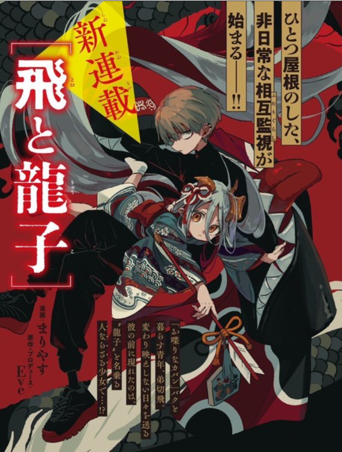

BIO
Eve is a Japanese singer-songwriter and Vocaloid producer, born on May 23, 1995. Initially using the stage names Keitora (けいとら) and Kurowa (クロわ), he later adopted the name Eve. He is known for his unique musical style that blends various genres, including rock, pop, and electronic influences. Eve's popularity surged after his involvement in the Vocaloid community, where he produced songs featuring Vocaloid characters before launching his solo career. He is signed under Toy's Factory, a major Japanese record label.
.webp)
Eve's music is often associated with his distinctive, emotionally charged lyrics and his collaboration with various artists. His songs have been featured in numerous anime series, such as "Jujutsu Kaisen" and "My Hero Academia," which helped expand his fanbase beyond Japan. Some of his hit singles include "Kaikai Kitan" (the opening theme for Jujutsu Kaisen) and "Bokurano" (from My Hero Academia).
.png)
In addition to music, Eve has branched into other creative fields, including publishing a manga called Kara no Kioku and writing a light novel, How to Eat Life. He also has a clothing line, Harapeco Store, and engages with fans on platforms like YouTube and TikTok.
